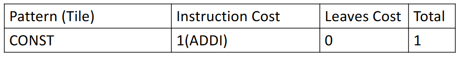
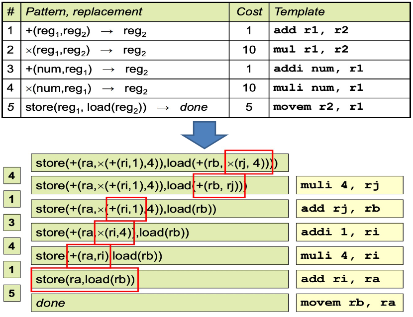

指令选择¶
约 2737 个字 8 行代码 预计阅读时间 9 分钟
指令选择概述¶
指令选择问题¶
将 IR 映射为抽象汇编代码（abstract assembly code），即具有无限寄存器的汇编：
- 为中间结果发明新的临时对象
- 稍后映射到实际寄存器
但是翻译给定陈述的方式不只一种，因此需要选择最佳的指令序列，其中标准包括
- 指令选择技术
- 必须产生好的代码
- 必须跑得快
- “好”的几个指标
- 最快的
- 最小
- 最大限度地减少功耗
综合来看，需考虑指令代价、运算对象和结果如何存储等多重因素

在实现上，可以使用模式匹配技术（pattern matching techniques）来挑选与程序 IR 片段相匹配的机器指令。具体方式包括：
- 面向树的 IR（Tree-oriented IR）可以对树进行模式匹配
- 树模式（tree-patterns）作为输入，匹配器（matcher）作为输出
- 例如，基于动态规划的匹配
- 线性 IR（Linear IR）可以使用某种字符串匹配
- 字符串作为输入，匹配器作为输出
- 例如，Text matching, peephole matching 等
在实践中，两者都运作良好，但是匹配器通常有很大不同
基于树覆盖的指令选择¶
为了说明指令选择，我们使用一个简单的指令集：Jouette architecture
- RISC 风格的加载/存储架构
- 相对较大的通用 register file
- 数据或地址可以驻留在寄存器中
- 每条指令可以访问任何寄存器
r0总为 0- 每条指令都有一个周期的延迟
- MOVEM 除外
- 每个周期仅执行一条指令
The Jouette Architecture

为什么不使用 Macro Expansion 进行指令选择？
宏展开/模版匹配指
- 对于每条 IR，有一条或多条机器指令与其相对应
- 使用预制好的指令模板替换对应的每一条输入 IR
优点在于：实现简单，易于理解 缺点在于：通常只支持 1:1 或 1:N 的情况，难以处理 N:1 或 N:M 的场景（多条 IR 对应一条或者多条机器指令），往往导致生成的指令比较低效
Tree pattern：每个机器指令都可以指定为一个 IR 树片段，这一块就称为 tree pattern，也称为 tile
指令选择的目标：使用一组不重叠的 tree patterns 来覆盖（一个程序片段的）整个 IR 树
Tree Patterns

Tree 语言在每个树结点中只表达一种操作（如获取、存储、加法等），而真实的机器指令通常可以执行多个原始操作
因此，基本想法是每条机器指令对 IR 树的一部分执行计算（一个 tile），并通过新的保存 tile 结果的临时寄存器来连接图块

因此，我们可以总结出 Jouette 的 Tree Patterns（CONST 和 TEMP 结点的实际值在下图中被忽略；有些指令对应多个树模式）

Generate Instructions from Tilings
对于 a[i] := x，假设 i 在寄存器中，a 和 x 在栈帧中

其中块 1、3 和 7 不对应于任何机器指令，因为它们只是（虚拟）寄存器（TEMP）
此外，不必担心铺不满的问题，因为总是可以用小块来平铺树，每个块只覆盖一个结点

Optimal and Optimum Tilings¶
如何以最短的执行时间挑选覆盖 IR 语句树的 tiles
- 需要选择好的 tiles
- 小 tiles，确保我们可以铺上每棵树
- 大 tiles 提高效率
- 通常要挑选大块的瓷砖
- 可以产生更少的指令
- 指令 ≠ 周期：RISC 核心指令需要 1 个周期，其他指令可能需要更多
我们希望找到一个成本最低的指令序列
- 执行时间最短的指令序列
- 对于 single issue fixed-latency 机器，意味着指令数量最少
因此，有两类最优的做法
- Optimum tiling
- Tiles 总和为尽可能低的值
- 全局最优
- Optimal tiling
- 没有任何相邻的 tiles 可以组合成成本更低的单个 tile
- 局部最优
每个 optimum tiling 也是 optimal 的，但反之则不然
Optimal and Optimum Tilings
Suppose every instruction costs one unit, except for MOVEM which costs m units
指令选择算法¶
Maximal Munch¶
Maximal Munch：找到 optimal tiling
- 自顶向下策略
- 用最大平铺覆盖当前结点
- 在子树上重复
- 平铺放置后以相反顺序生成指令
总体过程：
- 从树的根部开始，找到适合的最大 tile（如果多个 tiles 大小相等，随机选择一个）
- 使用该 tile 覆盖根结点，可能还有根附近的其他几个结点没被覆盖，留下几个子树
- 对每个子树重复相同的算法
Maximal Munch

Dynamic Programming¶
Lemma
Once minimum cost tiling of all children of a node is known, can find minimum cost tiling of the node by trying out all possible tiles matching the node
动态规划（Dynamic Programming）：找到 optimum tiling，使得树的 tiles 总成本最小
- 自下而上的策略
- 为每个结点分配成本
- 成本 = 所选 tiles 的成本 + 子树的成本
- 选择成本最小的 tiles 并向上递归
动态规划的大体方法为：
- 维护一个表：结点 \(x\) -> 结点 \(x\) 的 optimum tiling covering 及其成本
- 对于结点 \(x\)，令 \(f(x)\) 为以 \(x\) 为根的整个表达式树的 optimum tiling 的成本
- \(f(x)=\min _{\forall \text { tile } T \text { covering } x}\left(\operatorname{cost}(T)+\sum_{\forall \text { child } y \text { of tile } T} f(y)\right)\)
给定根结点为 \(n\) 的 IR 树，具体来说过程为：
- 首先，递归地找到结点 \(n\) 的所有子结点（和孙子结点等）的成本
- 然后，每个 tree-pattern（tile kind）与结点 \(n\) 进行匹配
- 每个 tile 都有零个或多个叶子，这些叶子需要被看作子树并计算成本
- 对于在结点 \(n\) 处匹配的具有成本 \(c_t\) 的每个 tile \(t\)，总的成本为（\(c_i\) 已计算） \(c_{t}+\sum_{\text {all leaves } i \text { of } t} c_{i}\)
- 选择具有最小成本的 tree pattern
Dynamic Programming
对于 MEM(PLUS(CONST(1), CONST(2)))

先考虑叶子里的 CONST 结点，唯一匹配的 tile 是 ADDI，成本为 1

继续考虑 + 结点

最后考虑 MEM 结点

一旦找到根结点（以及整个树）的成本，指令发射（instruction emission）阶段就开始。算法如下：
\begin{algorithm}
\caption{Instruction Emission}
\begin{algorithmic}
\Function{Emission}{$n$}
\For{each leaf $l_i$ of the tile selected at node $n$}
\State \Call{Emission}{$l_i$}
\EndFor
\State Emit the instruction matched at node $n$
\EndFunction
\end{algorithmic}
\end{algorithm}
Instruction Emission

*Tree Grammar¶
对于具有复杂指令集、多个类别寄存器和寻址模型的机器（比如 CISC），使用简单的 tree patterns 和 tiling alg. 可能很困难，另外 Hard-codes the tiles in the code generator: tedious, error-prune!
因此，考虑在单独的规范中定义 tiles，使用通用的 tree pattern 匹配算法来计算 tiling，也就是 instruction selector generators
- 使用 tree grammar（一种特殊的上下文无关语法）来描述 tiles
- 将指令选择规约为 parsing problem
- 使用动态规划算法的推广来进行 parsing
图块的关系被编码为重写规则（rewriting rules），每个规则包括
- 树语法中的产生式
- 相关成本
- 代码生成模板

其他关于树语法的内容
树语法可能是不明确的，有许多不同的指令序列会产生相同的表达式
Chapter 3 讲述的 parsing techniques 不太适用于树语法，需要使用动态规划算法的推广（a generalization of the dynamic-programming algorithm）
此外，这样多个编译任务都可以形式化描述并自动生成其实现

Tree Grammar

总结¶
Tiling 算法的效率¶
假设：
- \(T\)：不同 tiles 的数量
- \(K\)：平均匹配 tiles 包含 K 个非叶结点
- \(K'\)：为了查看哪些 tile 在给定子树上匹配，需要检查的最大结点数
- \(T'\)：每个树结点上匹配的不同 patterns（tiles）的平均数量
- \(N\)：输入树中的结点数
Maximal munch: proportional to \(\frac{(K' + T')N}{K}\)
Dynamic programming: proportional to \((K' + T')N\)
\(K\)、\(K'\) 和 \(T'\) 是常数，所有这些算法的运行时间都是线性的
指令选择技巧（输入：IR Tree）¶

现代机器¶
CISC 与 RISC 对比¶
CISC 很难通过 tree pattern-based tilings 进行建模
CISC 存在的问题及解决方案¶
- 寄存器很少
- 解决方案：自由生成
TEMP结点，并假设寄存器分配会做得很好
- 解决方案：自由生成
- 多种寄存器类别
- 例如，Pentium 的乘法指令要求将左操作数放入寄存器
eax，结果的高位放入rdx - 解决方案：显式移动操作数和结果
- 示例：实现
t1 <- t2 × t3：
- 例如，Pentium 的乘法指令要求将左操作数放入寄存器
- 双地址指令
- 解决方案：添加额外的移动指令
- 示例：实现
t1 <- t2 + t3 - 实际上，我们还希望寄存器分配器能够将
t1和t2分配到同一个寄存器，这样mov指令就会被删除
- 算术运算可以寻址内存
- 指令选择阶段将每个 TEMP 结点变成“寄存器”的引用，这些“寄存器”的引用实际上都是内存位置
- 解决方案：在操作前将所有操作数取出到寄存器中，然后将它们存储回内存
- 示例：实现
add [ebp - 8], ecx
- 多种寻址模式
- 优点在于
- 他们“垃圾”的寄存器更少
- 更短的指令编码
- 通过一些工作，可以用 tree-matching instruction selection 来对 CISC 进行指令选择，但使用简单的类 RISC 指令，程序也可以同样快
- 优点在于
- 变长指令
- 对于编译器来说并不是真正的问题
- 一旦选择了指令，汇编器发出编码就是一件微不足道（尽管很乏味）的事情
- 有副作用的指令
- 有些机器有一个“下标自动增加”的内存提取指令，其效果是
r2 <- M[r1]; r1 <- r1 + 4 - 使用 tree patterns 很难建模，因为它会产生两个结果
- 共有三种解决方案：
- 忽略自动增量指令，不使用它
- 尝试在 tree pattern-matching code generator 的上下文中以特殊方式匹配特殊习惯用法
- 使用完全不同的指令算法，一种基于 DAG patterns 而不是 tree pattern 的算法
- 有些机器有一个“下标自动增加”的内存提取指令，其效果是
指令选择算法¶
Optimal tilings 算法比 optimum tilings 算法更简单
- 对于 CISC，两种算法的差异是显而易见的
- 因为有些指令每条指令完成多个操作
- 对于 RISC，两种算法通常没有区别
- 因为 tiles 很小且成本统一
对于 RISC，更简单的平铺算法就足够了
现代处理器的指令选择¶
执行时间不是 tiles 时间的总和，因为成本是一个近似值
此外，指令顺序也很重要
- 在流水线中，不同指令有部分重叠
- 错误的顺序会阻碍流水线
- 指令调度有帮助
创建日期: 2024年6月22日 16:00:36